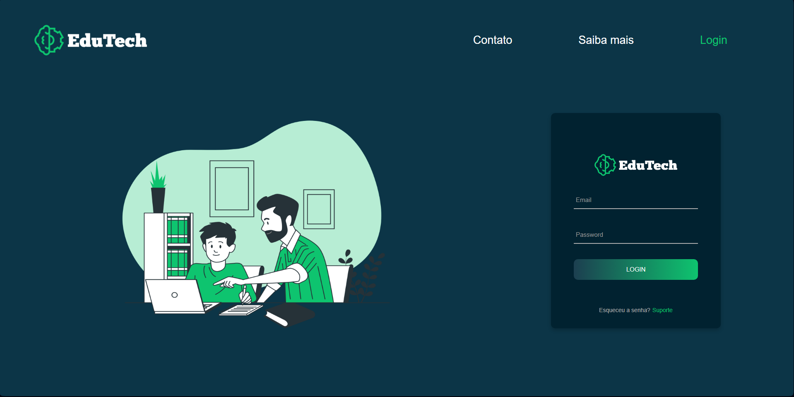
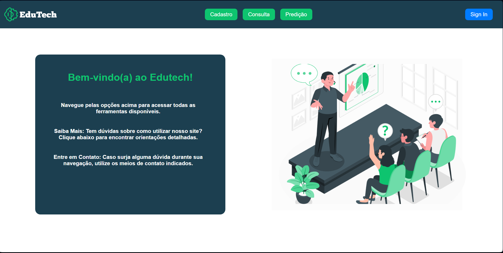
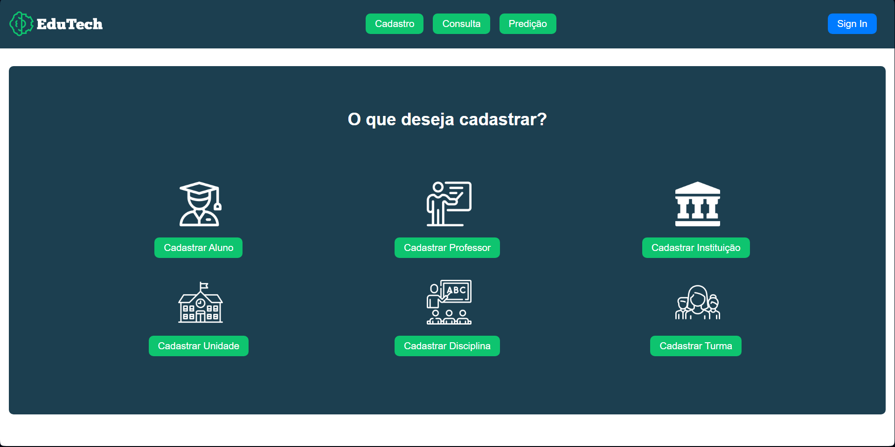

Edutech - Acompanhamento de alunos de ensino médio em escolas privadas
Edutech - Acompanhamento de alunos de ensino médio em escolas privadas
Descrição do Desafio: Criar uma solução de predição de notas por meio de Machine Learning de alunos de ensino médio de escolas privadas com base no seu histórico acadêmico anterior, perfil familiar, perfil social, interação familiar com a educação, participação em atividades, desempenho acadêmico, evento escolares, histórico financeiro etc. para prever desempenho futuro do aluno (reprovação em matérias especificas, potencial de inadimplência, evasão, etc.)
Habilidades necessárias/preferenciais: Programação em Python, conhecimento em machine learning e Banco de Dados.
Mentores: Guilherme e Thais R.
Tamanho do projeto: Médio/Grande
Dificuldade: Médio.
Resultados esperados: Solução em IA ou BigData para prever o futuro acadêmico e financeiro do aluno com base na sua história e comportamento escolar.
Resultado obtido:
-
MVP - Estrutura de cadastro individual e importação de planilha de instituição, unidade de ensino, disciplina, professor, turma e aluno, consulta de alunos matriculados e por ultimo predição de nota com base no histórico acadêmico anterior do aluno, perfil familiar, perfil social, interação familiar com a educação, participação em atividades, desempenho acadêmico, evento escolares, histórico financeiro etc.
-
Imagens da plataforma Edutech:   
-
Foto da equipe: | Foto | Membro | Papel | Github | | ———- | ————————————— | ————— | —————————————————- | |
| Carlos Eduardo Vaz Ferreira | Designer | @VazFCarlos | |
| Fause Carlos Mascarenhas Lustosa Júnior | Scrum Master| @FauseSkyWalker| |
| Luís Guilherme Gaboardi Lins | Desenvolvedor Backend | @luisgaboardi| |
| Mariana Oliveira Pires do Rio | Desenvolvedora Frontend | @MarianaPRio| |
| Renan Girão Evangelista | Documentação | @RenanGirao|
Lições aprendidas
-
Carlos Eduardo Vaz Ferreira: Ao longo do programa, aprimorei meus conhecimentos em Python, consolidando aprendizado no uso de bibliotecas como pandas, numpy, matplotlib e seaborn, principalmente através da prática em notebooks. Aprendi sobre técnicas de machine learning, explorando tanto regressão linear quanto redes neurais, o que expandiu minha compreensão das aplicações práticas desses algoritmos. Além disso, adquiri conhecimento no desenvolvimento de interfaces de usuário, trabalhando com protótipos no Figma e implementando-os utilizando React no frontend. A familiarização com práticas de controle de versão usando Git e GitHub também fez parte do meu aprendizado, fortalecendo minhas habilidades colaborativas e organizacionais no desenvolvimento de software.
-
Fause Carlos Mascarenhas Lustosa Júnior: Durante o desenvolvimento do projeto, deparei-me com diversas tecnologias com as quais ainda não havia tido contato, destacando-se a biblioteca scikit-learn. Utilizamos essa ferramenta para realizar previsões de regressão linear e de redes neurais de machine learning, o que se revelou uma experiência enriquecedora, abrindo inúmeras portas para o vasto mundo da inteligência artificial.
Além disso, aprofundei meus conhecimentos em desenvolvimento tanto no frontend quanto no backend, empregando tecnologias como React e Python de maneira conjunta. Essa abordagem integrada foi essencial para alcançar o resultado final do produto. A combinação dessas competências permitiu uma sinergia eficaz entre as camadas de interface do usuário e o processamento de dados nos bastidores, contribuindo para a entrega de um produto final robusto e funcional. Essa experiência ampliou significativamente meu conjunto de habilidades e conhecimentos, proporcionando uma visão mais abrangente e aprofundada no campo da inteligência artificial e desenvolvimento de software.
-
Luís Guilherme Gaboardi Lins: Esse projeto me deu a oportunidade de trabalhar e de enfrentar os desafios de atuar em uma equipe multidisciplinar em um projeto majoritariamente de software tal qual o nosso. No âmbito social, foi muito interessante tentar integrar pessoas de diferentes backgrounds e etapas de cursos. No que diz respeito aos aspectos técnicos, foi desafiador, tanto como Scrum Master quanto como líder técnico. Enfrentar as incertezas e as coisas inesperadas que aconteceram ao longo do projeto foi difícil mas satisfatório após as resoluções. Além disso, aprofundei meus conhecimentos em machine learning, desenvolvimento backend e devops
-
Mariana Oliveira Pires do Rio: O programa de Residência BRISA me proporcionou a oportunidade de explorar novas tecnologias e enfrentar diversos desafios. Adquiri uma compreensão teórica e prática de como as aplicações funcionam por meio de Machine Learning, reconhecendo sua inovação na criação de softwares. Durante esse aprendizado, desenvolvi habilidades para criar modelos preditivos e realizar análises de dados avançadas, percebendo como essas competências podem ser integradas de maneira eficaz em diversos contextos profissionais. Além disso, explorei a gestão de projetos, compreendendo a função de um Project Owner e como desempenhá-la de maneira eficiente em projetos de software
-
Renan Girão Evangelista: Minha participação no projeto de software proporcionou uma experiência incrivelmente diversificada, especialmente considerando minha formação em engenharia aeroespacial. Adquiri conhecimentos sobre o modelo ágil, uma abordagem dinâmica e colaborativa para o desenvolvimento de software, que trouxe uma perspectiva inovadora em comparação com métodos mais tradicionais. Além disso, envolvi-me na criação de um site, expandindo meu domínio para além da minha área original de especialização. É interessante destacar que antes desse projeto, eu sequer possuía uma conta no GitHub, e agora, imerso no universo da colaboração e desenvolvimento de código, adquiri uma compreensão valiosa. Essas habilidades adicionais certamente enriquecerão minha bagagem profissional, destacando minha versatilidade e capacidade de adaptação, características cada vez mais valorizadas no cenário de trabalho contemporâneo.
Link para a solução: Edutech - Repositório Github